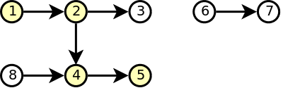
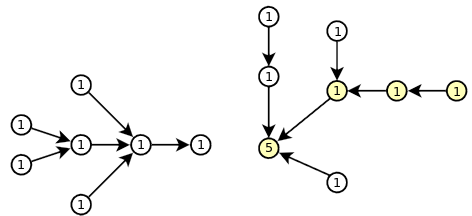
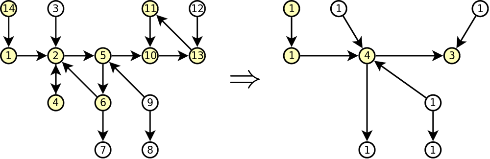

Tipo de problema: Teoria de Grafos
Autor do Problema: João Ramos (Warwick Uni.)
O Problema
Dado um grafo direcionado com N vertices e M arestas,
a tua tarefa é determinar tamanho do maior grupo pacífico, ou
seja, o tamanho do maior grupo de nós do grafo tal que se A e B
pertencem ao grupo, então existe um caminho de A para B ou de B
para A.
Restrições:
| 1 ≤ N ≤ 100 000 |
|
Números de vertices |
| 1 ≤ M ≤ 500 000 |
|
Número de arestas |
Visão geral do problema e dos grupos de testes:
Neste problema os limites do tamanho do grafo são iguais em
todos os grupos de testes, variando apenas no tipo de grafos
que podem aparecer em cada caso.
O primeiro grupo tem como objectivo ser mais simples para se
ficar mais confortavel com o problema e entender o que é pedido.
Depois o segundo grupo inclui apenas um tipo de grafos muito
interessante e irá fornecer uma componente muito útil para
resolver os grupos de teste 3 e 4.
No terceiro grupo de testes o grafo começa a ficar um pouco
mais complexo mas apenas o suficiente para que ajuda a ter as
ideias e observações necessárias para resolver o último grupo
de testes que inclui qualquer tipo de grafo direcionado.
Grupo de testes 1 (Se existe uma aresta de A para B então também existe uma aresta de B para A):
A primeira observação a fazer neste grupo de testes é que a
restrição é equivalente a dizer que o grafo é simples (não
direcionado).
Quando o grafo não é direcionado um grupo é pacífico se
pertence à mesma componente conexa.
Logo o tamanho do maior grupo pacífico é o tamanho da
maior componente conexa.
Para determinar a maior componente conexa apenas precisamos
de fazer uma pesquisa em profundidade (ou em largura, tanto
faz).
Excerto do código para resolver esta parte:
vector <int> g[MAX_N];
int sz[MAX_N], vis[MAX_N];
void dfs(int v, int c) {
if (vis[v]) return;
vis[v] = 1, sz[c] ++;
for (auto u : g[v])
dfs(u, c);
}
int solve() {
int ans = 0;
memset(sz, 0, sizeof sz);
memset(vis, 0, sizeof vis);
for (int i = 0; i < n; i ++) {
dfs(i, i);
ans = max(ans, sz[i]);
}
return ans;
}
Esta seria uma solução O(N + M) que daria os 20 pontos deste grupo de testes.
Grupo de testes 2 (Não existem ciclos no grafo):
Neste grupo de testes o grafo já é direcionado mas tem uma
propriedade muito interessante: é um grafo dirigido acíclico
(DAG).
Num DAG, como é a "estrutura" de um grupo pacífico? Ora se
uma aresta (u,v) pertence a este grupo, então o grupo
não pode ter qualquer outra aresta (u,w) pois em tal
caso não haveria um caminho de v para w nem de
w para v, e o grupo não seria pacífico.

Com esta observação podemos concluir que um grupo pacífico
forma um caminho no grafo.
Para encontrar o maior caminho num DAG devemos usar programação
dinâmica: o maior caminho que começa no nó i é o maior
caminho que começa num dos "sucessores" de i mais 1 (o
próprio nó i).
Excerto do código para resolver esta parte:
vector <int> g[MAX_N];
int dp[MAX_N];
int mx_path(int v) {
if (dp[v] == -1) {
dp[v] = 1;
for (auto u : g[v])
dp[v] = max(dp[v], 1 + mx_path(u));
}
return dp[v];
}
int solve() {
int ans = 0;
memset(dp, -1, sizeof dp);
for (int i = 0; i < n; i ++)
ans = max(ans, mx_path(i));
return ans;
}
Esta seria uma solução O(N + M) que daria os 30 pontos deste grupo de testes.
Nota: a solução para este grupo de testes (com uma ligeira modificação) vai ser útil para
resolver os grupos de testes que se seguem.
Grupo de testes 3 (Cada habitante confia no máximo num outro habitante):
Neste grupo de testes o grafo temos que o outdegree de cada nó é no máximo 1. Como se pode parecer
um tal grafo? Vê a figura abaixo com dois exemplos representativos da estrutura deste tipo de grafos:

Repara que o que temos são várias "àrvores invertidas" ligadas a um ciclo. No exemplo da esquerda
esse ciclo é composto apenas pelo nó 6 e no exemplo da direita o ciclo é composto pelos nós 8 a 12.
É altura então de fazer uma observação importante:
Se um nó qualquer do ciclo pertence a um grupo pacífico, então esse grupo pode incluir também todos
os outros nós que fazem parte do mesmo ciclo.
Esta observação permite-nos comprimir o ciclo num só nó. Ao comprimirmos os ciclos num só nó o grafo
resultante é um DAG e já sabemos como resolver esse caso (apenas precisamos de alterar ligeiramente a
solução do 2º grupo de testes para ter em conta o número de nós que estão comprimidos em cada nó). Vê
na figura abaixo como ficaria a compressão do grafo da figura anterior (o número dentro de cada nó
representa o número de nós comprimidos nele):

Vamos então agora ver um excerto de código que trata desta compressão e a ligeira alteração a fazer
na solução anterior, que vamos depois usar para resolver este grupo de testes e o seguinte também.
vector <int> g[MAX_N];
int p[MAX_N], sz[MAX_N], dp[MAX_N];
void init() {
for (int i = 0; i < n; i ++)
p[i] = i, sz[i] = 1;
}
void contract(int u, int v) {
if (u == v) return;
sz[u] = 0, p[u] = v, sz[v] ++;
for (auto w : g[u])
g[v].push_back(w);
}
// Slight modification of subtask 2
int mx_wpath(int v) {
if (dp[v] == -1) {
dp[v] = sz[v];
for (auto u : g[v])
if (p[u] != v)
dp[v] = max(dp[v], sz[v] + max_wpath(p[u]));
}
return dp[v];
}
int mx_wcc() {
int ans = 0;
memset(dp, -1, sizeof dp);
for (int i = 0; i < n; i ++)
ans = max(ans, mx_wpath(i));
return ans;
}
Com isto, apenas precisamos de identificar o ciclo para o poder comprimir. Dado o tipo de
grafo que pode aparecer aqui, uma possível estratégia é começar em cada nó e ir seguindo o
caminho até chegar a um nó "sem saída" ou até visitar um nó que já foi visto antes e, neste
caso, encontrámos um ciclo e podemos comprimi-lo. É importante também ir marcando todos os nós
já visitados (e em que iteração foram visitados) para garantir que não processamos cada nó mais
do que uma vez.
Excerto do código para resolver esta parte:
vector <int> g[MAX_N];
int vis[MAX_N];
int solve() {
init();
for (int i = 0; i < n; i ++)
if (!vis[i]) {
vis[i] = i;
int cur = i;
while (!g[cur].empty() && !vis[g[cur][0]]) {
vis[g[cur][0]] = i + 1;
cur = g[cur][0];
}
if (!g[cur].empty() && vis[g[cur][0]] == i + 1) {
int cur2 = g[cur][0];
while (cur2 != cur) {
contract(cur2, cur);
cur2 = g[cur2][0];
}
}
}
return max_wcc();
}
Esta seria uma solução O(N + M) que daria os 30 pontos deste grupo de testes.
Grupo de testes 4:
Chegamos por fim ao último grupo de testes que inclui qualquer tipo de grafo dirigido.
No grupo de testes anterior usamos uma técnica interessante: comprimir nós de forma a
obtermos um DAG equivalente (no contexto do nosso problema). Será que podemos fazer algo
semelhante num grafo qualquer? Como já deves estar a contar, a resposta é sim! Mas como?
Ora, no caso anterior comprimimos um ciclo porque incluir todos os nós do mesmo é melhor
do que incluir apenas um, e podemos fazer isto porque incluir todos os outros nós não
estraga o facto de o grupo ser pacífico. Mas esta propriedade não é exclusiva dos ciclos,
todas as componentes fortemente conexas têm esta propriedade.

Ao comprimirmos todas as componentes fortemente conexas vamos ter um DAG e já sabemos como
o resolver. Resta-nos então saber como descobrir estas componentes que é um problema clássico
de grafos e para o qual existem dois algoritmos bastante conhecidos: Kosaraju e Tarjan (vê as
"ligações interessantes" no fundo desta página). Podes ver no exemplo abaixo a utilização
do algoritmo de Kosaraju para encontrar estas componentes.
Excerto do código para resolver esta parte:
vector <int> g[MAX_N], S;
int vis[MAX_N];
void pre_scc(int v) {
if (vis[v]) return;
vis[v] = 1;
for (auto u : g[v])
pre_scc(u);
S.push_back(v);
}
void contract_scc(int u, int v) {
if (vis[u]) return;
vis[u] = 1;
contract(u, v);
for (auto w : h[u])
contract_scc(w, v);
}
int solve() {
init();
memset(vis, 0, sizeof vis);
for (int i = 0; i < n; i ++)
pre_scc(i);
memset(vis, 0, sizeof vis);
for (int i = n - 1; i >= 0; i --)
contract_scc(S[i], S[i]);
return max_wcc();
}
Esta seria uma solução O(N + M) que daria os tão desejados 100 pontos.
Ligações interessantes:
- Componentes fortemente conexas na Wikipedia.
- "Competitive Programming 3": Algoritmo de Kosaraju para componentes fortemente conexas.
- "Competitive Programming 3": Algoritmo de Tarjan para componentes fortemente conexas.